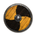
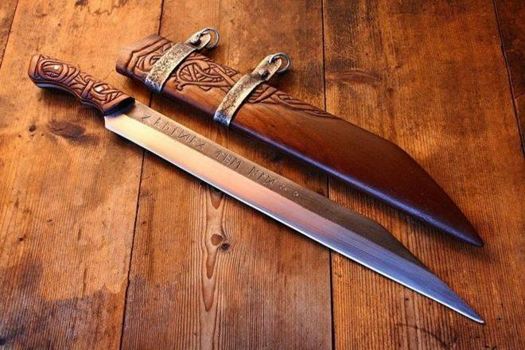

Епоха вікінгів
Епоха вікінгів
Сакси
Сакс, як і сокира, був інструментом повсякденного використання, який годився і в якості зброї. Сакс був практично у будь-якого воїна. Розкопки в Йорку виявили близько 300 саксів. Хоча це і англосаксонські знахідки, Йорк довгий час був центром вікінгів. Як випливає з назви ножа, сакс був саксонським ножем, але ними користувалися і сусідні народи.
Сакс - зрізаний з одного боку ніж довжиною від 7.5 до 75 см. Відомі два види саксів: короткі, довжиною до 35 см і довгі, довжиною від 50 до 75 см. Спочатку короткі сакси були повсякденним інструментом, який якщо і використовувався в якості зброї, то тільки для того, щоб добивати поранених ворогів. Довгий сакс спочатку створювався як зброя, але міг використовуватися і в якості мачете. Деякі довгі сакси оснащені рукоятками, як до мечів. Такі сакси виявлені в могилах вікінгів в Ірландії в Кілманхем-Айлсндбрідж.
Клинки саксів були прямими і тільки з однією ріжучою стороною. Обух клинка часто робився широким, а кінчик - гострим, що дозволяло наносити саксом колючі удари. Іноді в Скандинавії знаходять сакси з серпоподібним клинком. Сакс носили в шкіряних піхвах, які часто прикрашали міддю, бронзою або сріблом в залежності від спроможності власника. Також як списи, сокири і мечі, сакси іноді прикрашалися срібною інкрустацією.
Зброярня:
- 